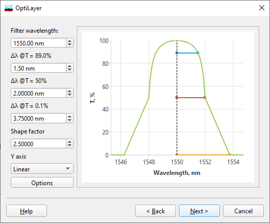

Filter Design - Filter Parameters
Filter Design - Filter Parameters

At the second step of the dialogue, it is necessary to specify the basic parameters of the designed filter. These parameters include:
Filter wavelength,
Half-width of the rejection band
Half-width at the 50% transmittance level (optional, depends on the WDM options in the Configuration dialogue),
Half-width of the transmission band
Shape factor (the ratio of half-widths of the rejection and transmission bands). This parameter is connected with the previous ones.
Select Linear Y-axis, Log Y-axis, or Diabatic Y-axis in order to specify a scale for the Y-axis of the preview screen. The preview screen shows a schematic of the filter to be designed. If necessary, specifications of the rejection and transmission levels can be changed using the Options… button. This button opens the WDM General Configuration dialogue. This dialogue allows the user to change levels specifying the rejection and transmission bands. The user can also specify whether to use the 50% transmission half-width requirement or not. See also: